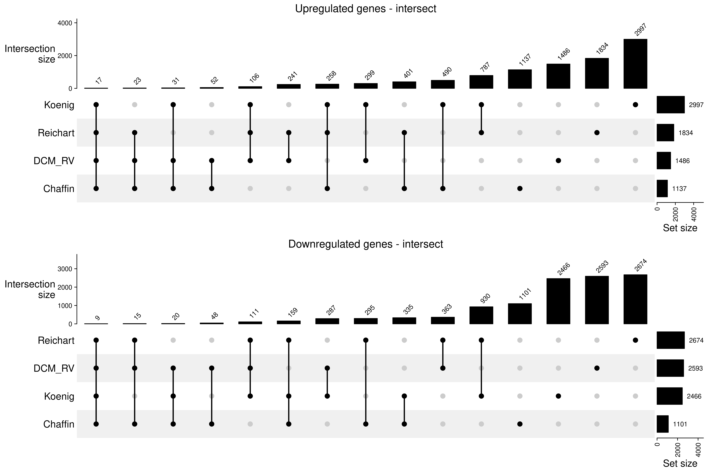
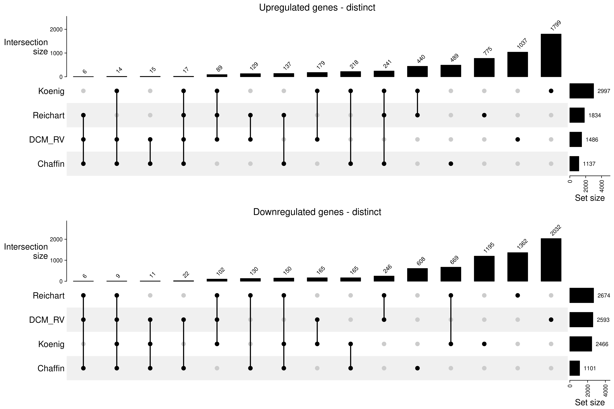
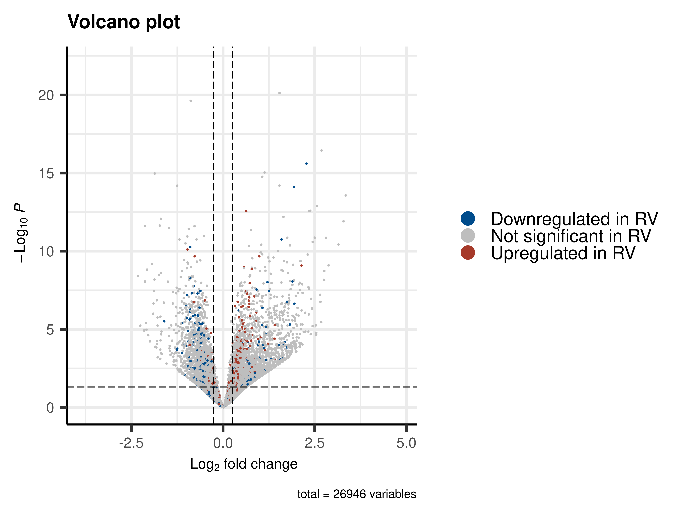
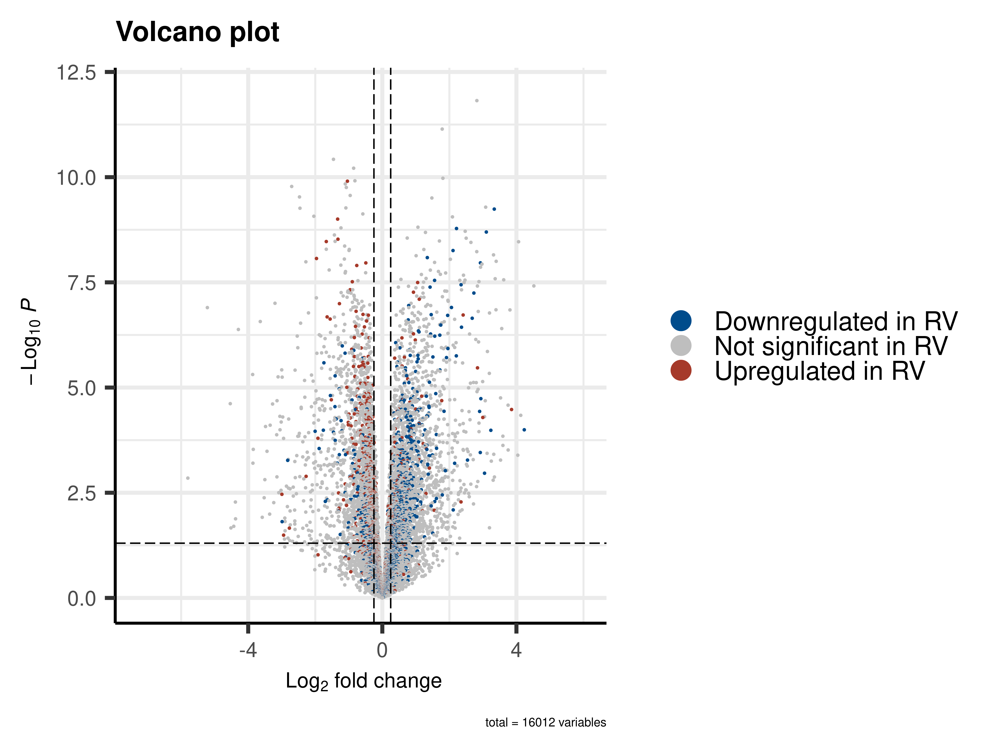
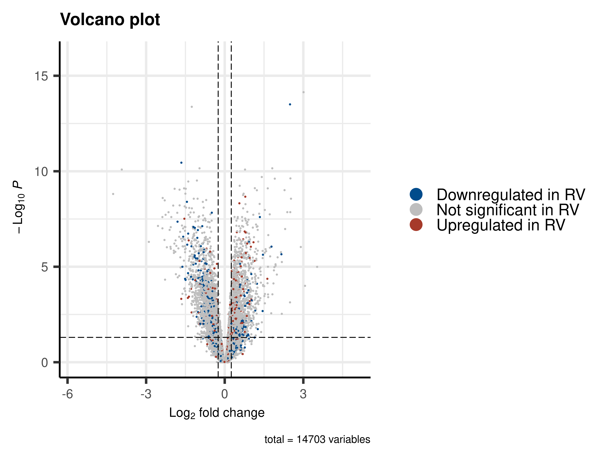
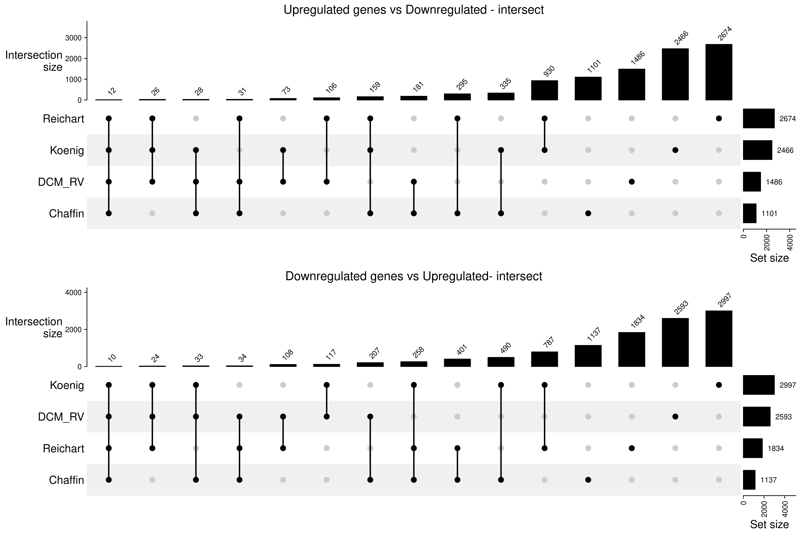
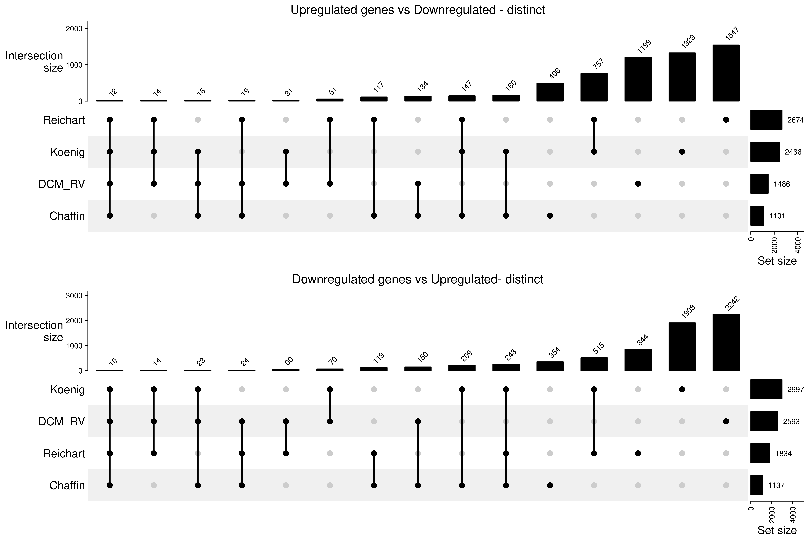

Comparison with published DCM LV datasets
GinoBonazza (ginoandrea.bonazza@usz.ch)
19 September, 2024
Last updated: 2024-09-19
Checks: 7 0
Knit directory: DCM_snRNAseq/
This reproducible R Markdown analysis was created with workflowr (version 1.7.1). The Checks tab describes the reproducibility checks that were applied when the results were created. The Past versions tab lists the development history.
Great! Since the R Markdown file has been committed to the Git repository, you know the exact version of the code that produced these results.
Great job! The global environment was empty. Objects defined in the global environment can affect the analysis in your R Markdown file in unknown ways. For reproduciblity it’s best to always run the code in an empty environment.
The command set.seed(20240606) was run prior to running
the code in the R Markdown file. Setting a seed ensures that any results
that rely on randomness, e.g. subsampling or permutations, are
reproducible.
Great job! Recording the operating system, R version, and package versions is critical for reproducibility.
Nice! There were no cached chunks for this analysis, so you can be confident that you successfully produced the results during this run.
Great job! Using relative paths to the files within your workflowr project makes it easier to run your code on other machines.
Great! You are using Git for version control. Tracking code development and connecting the code version to the results is critical for reproducibility.
The results in this page were generated with repository version 22e3f3a. See the Past versions tab to see a history of the changes made to the R Markdown and HTML files.
Note that you need to be careful to ensure that all relevant files for
the analysis have been committed to Git prior to generating the results
(you can use wflow_publish or
wflow_git_commit). workflowr only checks the R Markdown
file, but you know if there are other scripts or data files that it
depends on. Below is the status of the Git repository when the results
were generated:
Ignored files:
Ignored: .Rhistory
Ignored: .Rproj.user/
Ignored: output/Comparison_RV_bulk_RNAseq/
Ignored: output/SSc_PAH/
Untracked files:
Untracked: GRCh38-2020-A_build/
Untracked: analysis/Comparison_RV_bulk_RNAseq.Rmd
Untracked: analysis/DA_DE_all_cell_types_and_parameters.Rmd
Untracked: analysis/DE_all_cell_types_mPAP.Rmd
Untracked: analysis/DE_mPAP_all_cell_types.Rmd
Untracked: analysis/VennDiagram.2024-09-16_14-12-56.160498.log
Untracked: analysis/VennDiagram.2024-09-16_14-13-17.340014.log
Untracked: analysis/VennDiagram.2024-09-16_14-13-57.942673.log
Untracked: analysis/VennDiagram.2024-09-16_14-22-50.621507.log
Untracked: analysis/VennDiagram.2024-09-16_14-24-47.010131.log
Untracked: analysis/VennDiagram.2024-09-18_11-22-29.278827.log
Untracked: analysis/omnipathr-log/
Untracked: code/Add_metadata.R
Untracked: code/Check DYSF.R
Untracked: code/Clustering_genes.R
Untracked: code/DE_5_percent.Rmd
Untracked: code/DE_5_percent.html
Untracked: code/DE_5_percent/
Untracked: code/DE_CM_test1.R
Untracked: code/DE_no_401.Rmd
Untracked: code/DE_no_401.html
Untracked: code/DE_no_401/
Untracked: code/Differential abundance test1.R
Untracked: code/Differential_Expression_edgeR_All.Rmd
Untracked: code/Differential_Expression_edgeR_All_2.Rmd
Untracked: code/Differential_Expression_edgeR_All_2.html
Untracked: code/Differential_Expression_edgeR_All_Age.Rmd
Untracked: code/Differential_Expression_edgeR_All_Age_2.Rmd
Untracked: code/Differential_Expression_edgeR_All_Age_2.html
Untracked: code/Differential_Expression_edgeR_All_groups.Rmd
Untracked: code/Differential_Expression_edgeR_All_groups.html
Untracked: code/Differential_Expression_edgeR_All_groups_2.Rmd
Untracked: code/Differential_Expression_edgeR_All_groups_2.html
Untracked: code/Differential_Expression_edgeR_All_groups_3.Rmd
Untracked: code/Differential_Expression_edgeR_All_groups_3.html
Untracked: code/PCA and CCA analysis test.R
Untracked: code/Pseudobulk DCM HC.R
Untracked: code/Published_heart_datasets_RV_vs_LV.Rmd
Untracked: code/QC_integration_annotation_orig.Rmd
Untracked: code/UpSet_plot_DEGs.Rmd
Untracked: code/Volcano_highlighted_genes.R
Untracked: code/ezInteractiveTable.Rmd
Untracked: code/ezInteractiveTable.html
Untracked: code/old.R
Untracked: core
Untracked: data/Cellbender_output/
Untracked: data/Cellranger_output/
Untracked: data/DCM_Clinical_data.xlsx
Untracked: data/DCM_Clinical_data_26.xlsx
Untracked: data/Homo_sapiens.GRCh38.93.gtf
Untracked: data/Human_plasma_proteome.xlsx
Untracked: data/Published_datasets/
Untracked: data/Raw/
Untracked: data/SSc-PAH/
Untracked: data/gencode.v46.chr_patch_hapl_scaff.annotation.gtf
Untracked: data/gencode.v46.chr_patch_hapl_scaff.basic.annotation.gtf
Untracked: data/refdata-gex-GRCh38-2020-A/
Untracked: omnipathr-log/
Untracked: output/Cardiomyocytes_DA_DE/
Untracked: output/Cardiomyocytes_DA_DE_26/
Untracked: output/Cardiomyocytes_subclustering/
Untracked: output/Cardiomyocytes_subclustering_26/
Untracked: output/Comparison_LV/
Untracked: output/DA_DE_all_cell_types_and_parameters/
Untracked: output/DE_all_cell_types_mPAP/
Untracked: output/DE_mPAP_all_cell_types/
Untracked: output/Differential_expression_edgeR_All/
Untracked: output/Differential_expression_edgeR_All_Age/
Untracked: output/QC_integration_annotation/
Untracked: output/QC_integration_annotation_26/
Untracked: output/Reichart_DE_DCMvsHC/
Untracked: output/UntitledR.R
Untracked: reference_sources/
Unstaged changes:
Modified: analysis/Cardiomyocytes_DA_DE.Rmd
Modified: analysis/Cardiomyocytes_DA_DE_26.Rmd
Deleted: analysis/Differential_Expression_edgeR_All.Rmd
Deleted: analysis/Differential_Expression_edgeR_All_Age.Rmd
Note that any generated files, e.g. HTML, png, CSS, etc., are not included in this status report because it is ok for generated content to have uncommitted changes.
These are the previous versions of the repository in which changes were
made to the R Markdown (analysis/Comparison_LV.Rmd) and
HTML (docs/Comparison_LV.html) files. If you’ve configured
a remote Git repository (see ?wflow_git_remote), click on
the hyperlinks in the table below to view the files as they were in that
past version.
| File | Version | Author | Date | Message |
|---|---|---|---|---|
| Rmd | 22e3f3a | GinoBonazza | 2024-09-19 | wflow_publish("analysis/Comparison_LV.Rmd") |
Setup
# Get current file name to make folder
current_file <- "Comparison_LV"
# Load libraries
library(here)
library(readr)
library(readxl)
library(xlsx)
library(Seurat)
library(DropletUtils)
library(Matrix)
library(scDblFinder)
library(scCustomize)
library(dplyr)
library(ggplot2)
library(magrittr)
library(tidyverse)
library(reshape2)
library(S4Vectors)
library(SingleCellExperiment)
library(pheatmap)
library(png)
library(gridExtra)
library(knitr)
library(scales)
library(RColorBrewer)
library(Matrix.utils)
library(tibble)
library(ggplot2)
library(scater)
library(patchwork)
library(statmod)
library(ArchR)
library(clustree)
library(harmony)
library(gprofiler2)
library(clusterProfiler)
library(org.Hs.eg.db)
library(AnnotationHub)
library(ReactomePA)
library(statmod)
library(edgeR)
library(speckle)
library(EnhancedVolcano)
library(decoupleR)
library(OmnipathR)
library(dorothea)
library(enrichplot)
library(png)
library(reactable)
library(UpSetR)
library(ComplexHeatmap)
library(biomaRt)
library(rtracklayer)
library(cowplot)
#Output paths
output_dir_data <- here::here("output", current_file)
if (!dir.exists(output_dir_data)) dir.create(output_dir_data)
if (!dir.exists(here::here("docs", "figure"))) dir.create(here::here("docs", "figure"))
output_dir_figs <- here::here("docs", "figure", paste0(current_file, ".Rmd"))
if (!dir.exists(output_dir_figs)) dir.create(output_dir_figs)Load results of the DE analysis
cluster_names <- c("Cardiomyocytes", "Fibroblasts", "Endothelial_cells", "Pericytes", "Macrophages", "Lymphocytes", "Smooth_muscle_cells", "Neuronal_cells", "Endocardial_cells")results <- list()
for (i in seq_along(cluster_names)) {
results[[i]] <- read.csv(here::here("output", "DA_DE_all_cell_types_and_parameters", paste0(cluster_names[i], "_DE_Results_mPAP_mmHg.csv")))
names(results)[i] <- cluster_names[i]
}signif <- list()
for (i in seq_along(cluster_names)) {
signif[[i]] <- read.csv(here::here("output", "DA_DE_all_cell_types_and_parameters", paste0(cluster_names[i], "_DE_Significant_mPAP_mmHg.csv")))
names(signif)[i] <- cluster_names[i]
}CM_signif_cluster <- read.csv(here::here("output", "Cardiomyocytes_DA_DE_26", "CM_signif_cluster.csv"))Load seurat object
DCM_RV_integrated <- readRDS(here::here("output", "QC_integration_annotation_26", "DCM_RV_integrated.rds"))
DefaultAssay(DCM_RV_integrated) <- "RNA"DE_Chaffin <- read_excel(path = here::here("data", "Published_datasets", "Chaffin_2022_41586_2022_4817_MOESM5_ESM.xlsx"), sheet = 1)
DE_Chaffin <- dplyr::filter(DE_Chaffin, Comparison == "DCMvsNF", CellType == "Cardiomyocyte")
DE_Chaffin$Compatible_gene_symbol <- ifelse(
DE_Chaffin$Gene %in% rownames(DCM_RV_integrated), "TRUE",
"FALSE"
)
table(DE_Chaffin$Compatible_gene_symbol)
FALSE TRUE
3 16009 DE_Chaffin_signif <- dplyr::filter(DE_Chaffin, Significant == "TRUE" & abs(logFC) > 0.25)
table(DE_Chaffin_signif$Compatible_gene_symbol)
FALSE TRUE
1 2237 print("Gene symbols don't have to be converted")[1] "Gene symbols don't have to be converted"DE_Koenig <- read_excel(path = here::here("data", "Published_datasets", "Koenig_2022_44161_2022_28_MOESM4_ESM.xlsx"), sheet = 1)
DE_Koenig$Compatible_gene_symbol <- ifelse(
DE_Koenig$Gene %in% rownames(DCM_RV_integrated), "TRUE",
"FALSE"
)
table(DE_Koenig$Compatible_gene_symbol)
FALSE TRUE
8414 18532 DE_Koenig_signif <- dplyr::filter(DE_Koenig, padj < 0.05 & abs(log2FoldChange) > 0.25)
table(DE_Koenig_signif$Compatible_gene_symbol)
FALSE TRUE
1179 4776 print("Gene symbols have to be converted")[1] "Gene symbols have to be converted"DE_Reichart <- read.csv(here::here("output", "Reichart_DE_DCMvsHC", "CM_Reichart_DE_Results.csv"))
DE_Reichart$Compatible_gene_symbol <- ifelse(
DE_Reichart$gene %in% rownames(DCM_RV_integrated), "TRUE",
"FALSE"
)
table(DE_Reichart$Compatible_gene_symbol)
FALSE TRUE
2098 12605 DE_Reichart_signif <- dplyr::filter(DE_Reichart, FDR < 0.05 & abs(logFC) > 0.25)
table(DE_Reichart_signif$Compatible_gene_symbol)
FALSE TRUE
637 3921 print("Gene symbols have to be converted")[1] "Gene symbols have to be converted"# Step 1: Connect to the Ensembl GRCh37 BioMart database
grch37 <- useMart("ENSEMBL_MART_ENSEMBL",
dataset = "hsapiens_gene_ensembl",
host = "grch37.ensembl.org")
# Step 2: Convert GRCh37 gene symbols to Ensembl IDs
gene_list <- DE_Koenig$Gene
# Query BioMart to get Ensembl Gene IDs for the GRCh37 gene symbols
grch37_gene_ids <- getBM(attributes = c("ensembl_gene_id", "external_gene_name"),
filters = "external_gene_name",
values = gene_list,
mart = grch37)
# Identify unmatched genes
unmapped_genes <- setdiff(gene_list, grch37_gene_ids$external_gene_name)
# Step 5: Use the GRCh38 reference GTF file (from refdata-gex-GRCh38-2020-A) to match Ensembl IDs
reference_genes <- readGFF(here::here("data", "refdata-gex-GRCh38-2020-A", "genes", "genes.gtf"))
# dplyr::filter only gene-level annotations and select relevant columns
reference_gene_mapping <- reference_genes %>%
dplyr::filter(type == "gene") %>%
dplyr::select(gene_id, gene_name)
# Match the Ensembl IDs from GRCh37 with the GRCh38 reference
matched_genes_grch38 <- reference_gene_mapping %>%
dplyr::filter(gene_id %in% grch37_gene_ids$ensembl_gene_id)
unmatched_genes <- setdiff(grch37_gene_ids$ensembl_gene_id, matched_genes_grch38$gene_id) #Contains multiple ensembl gene ids from the same gene symbol
# Join the data with GRCh37 Ensembl IDs and GRCh38 gene names
DE_Koenig <- DE_Koenig %>%
left_join(grch37_gene_ids, by = c("Gene" = "external_gene_name")) %>%
left_join(reference_gene_mapping, by = c("ensembl_gene_id" = "gene_id"))
# Prefer rows with non-NA gene_name
DE_Koenig <- DE_Koenig %>%
dplyr::group_by(Gene) %>%
dplyr::arrange(desc(!is.na(gene_name))) %>%
dplyr::slice(1) %>%
dplyr::ungroup()
# Check compatibility again after conversion
DE_Koenig$Compatible_gene_symbol <- ifelse(DE_Koenig$gene_name %in% rownames(DCM_RV_integrated), "TRUE", "FALSE")
table(DE_Koenig$Compatible_gene_symbol)
FALSE TRUE
3015 23931 DE_Koenig$Gene_name_conversion <- ifelse(DE_Koenig$Gene %in% unmapped_genes, "Unmapped to GRCh37",
ifelse(DE_Koenig$ensembl_gene_id %in% unmatched_genes, "Not matched to GRCh38",
ifelse(DE_Koenig$Compatible_gene_symbol == "TRUE", "Conversion OK",
"Not present in DCM_RV")))
DE_Koenig_signif <- DE_Koenig %>%
dplyr::filter(padj < 0.05 & abs(log2FoldChange) > 0.25)
table(DE_Koenig_signif$Compatible_gene_symbol)
FALSE TRUE
497 5458 table(DE_Koenig_signif$Gene_name_conversion)
Conversion OK Not matched to GRCh38 Not present in DCM_RV
5458 179 5
Unmapped to GRCh37
313 print("Results are acceptable")[1] "Results are acceptable"rm(grch37, gene_list, grch37_gene_ids, unmapped_genes, matched_genes_grch38, unmatched_genes)Reichart_gene_names <- read.csv(here::here("output", "Reichart_DE_DCMvsHC", "CM_Reichart_gene_names.csv"))
DE_Reichart <- left_join(DE_Reichart, Reichart_gene_names, by = c("gene" = "gene_symbol"))
unmatched_genes <- setdiff(DE_Reichart$ensembl_id, reference_gene_mapping$gene_id) #Contains multiple ensembl gene ids from the same gene symbol
length(unmatched_genes)[1] 156DE_Reichart <- left_join(DE_Reichart, reference_gene_mapping, by = c("ensembl_id" = "gene_id"))
# Check compatibility again after conversion
DE_Reichart$Compatible_gene_symbol <- ifelse(
DE_Reichart$gene_name %in% rownames(DCM_RV_integrated), "TRUE",
"FALSE"
)
table(DE_Reichart$Compatible_gene_symbol)
FALSE TRUE
159 14544 DE_Reichart_signif <- dplyr::filter(DE_Reichart, FDR < 0.05 & abs(logFC) > 0.25)
table(DE_Reichart_signif$Compatible_gene_symbol)
FALSE TRUE
51 4507 print("Results are acceptable")[1] "Results are acceptable"gene_sets_up <- list(
DCM_RV = dplyr::filter(signif[["Cardiomyocytes"]], logFC > 0)$gene,
Chaffin = dplyr::filter(DE_Chaffin_signif, logFC > 0)$Gene,
Koenig = dplyr::filter(DE_Koenig_signif, log2FoldChange > 0)$gene_name,
Reichart = dplyr::filter(DE_Reichart_signif, logFC > 0)$gene_name
)
gene_sets_up <- lapply(gene_sets_up, function(x) x[!is.na(x)])
m <- make_comb_mat(gene_sets_up, mode = "intersect", min_set_size = 1)
p1 <- UpSet(m, column_title = "Upregulated genes - intersect", comb_order = order(comb_size(m)),
top_annotation = upset_top_annotation(m, add_numbers = TRUE),
right_annotation = upset_right_annotation(m, add_numbers = TRUE))
gene_sets_down <- list(
DCM_RV = dplyr::filter(signif[["Cardiomyocytes"]], logFC < 0)$gene,
Chaffin = dplyr::filter(DE_Chaffin_signif, logFC < 0)$Gene,
Koenig = dplyr::filter(DE_Koenig_signif, log2FoldChange < 0)$gene_name,
Reichart = dplyr::filter(DE_Reichart_signif, logFC < 0)$gene_name
)
gene_sets_down <- lapply(gene_sets_down, function(x) x[!is.na(x)])
m <- make_comb_mat(gene_sets_down, mode = "intersect")
p2 <- UpSet(m, column_title = "Downregulated genes - intersect", comb_order = order(comb_size(m)),
top_annotation = upset_top_annotation(m, add_numbers = TRUE),
right_annotation = upset_right_annotation(m, add_numbers = TRUE))
p1 <- grid::grid.grabExpr(draw(p1))
p2 <- grid::grid.grabExpr(draw(p2))
combined_plots <- plot_grid(p1, p2, ncol = 1)
print(combined_plots)
rm(m, p1, p2, combined_plots)gene_sets_up <- list(
DCM_RV = dplyr::filter(signif[["Cardiomyocytes"]], logFC > 0)$gene,
Chaffin = dplyr::filter(DE_Chaffin_signif, logFC > 0)$Gene,
Koenig = dplyr::filter(DE_Koenig_signif, log2FoldChange > 0)$gene_name,
Reichart = dplyr::filter(DE_Reichart_signif, logFC > 0)$gene_name
)
gene_sets_up <- lapply(gene_sets_up, function(x) x[!is.na(x)])
m <- make_comb_mat(gene_sets_up, mode = "distinct", min_set_size = 1)
p1 <- UpSet(m, column_title = "Upregulated genes - distinct", comb_order = order(comb_size(m)),
top_annotation = upset_top_annotation(m, add_numbers = TRUE),
right_annotation = upset_right_annotation(m, add_numbers = TRUE))
gene_sets_down <- list(
DCM_RV = dplyr::filter(signif[["Cardiomyocytes"]], logFC < 0)$gene,
Chaffin = dplyr::filter(DE_Chaffin_signif, logFC < 0)$Gene,
Koenig = dplyr::filter(DE_Koenig_signif, log2FoldChange < 0)$gene_name,
Reichart = dplyr::filter(DE_Reichart_signif, logFC < 0)$gene_name
)
gene_sets_down <- lapply(gene_sets_down, function(x) x[!is.na(x)])
m <- make_comb_mat(gene_sets_down, mode = "distinct")
p2 <- UpSet(m, column_title = "Downregulated genes - distinct", comb_order = order(comb_size(m)),
top_annotation = upset_top_annotation(m, add_numbers = TRUE),
right_annotation = upset_right_annotation(m, add_numbers = TRUE))
p1 <- grid::grid.grabExpr(draw(p1))
p2 <- grid::grid.grabExpr(draw(p2))
combined_plots <- plot_grid(p1, p2, ncol = 1)
print(combined_plots)
rm(m, p1, p2, combined_plots)keyvals <- rep("grey", nrow(DE_Koenig))
names(keyvals) <- rep("Not significant in RV", nrow(DE_Koenig))
keyvals[DE_Koenig$gene_name %in% dplyr::filter(signif[["Cardiomyocytes"]], logFC>0)$gene] <- "#A63A2A"
names(keyvals)[keyvals == "#A63A2A"] <- "Upregulated in RV"
keyvals[DE_Koenig$gene_name %in% dplyr::filter(signif[["Cardiomyocytes"]], logFC<0)$gene] <- "#004C8C"
names(keyvals)[keyvals == "#004C8C"] <- "Downregulated in RV"
volcano <- EnhancedVolcano(DE_Koenig,
lab = DE_Koenig$gene_name,
x = "log2FoldChange",
y = "padj",
labSize = 0,
legendLabSize = 15,
titleLabSize = 16,
subtitleLabSize = 12,
axisLabSize = 12,
captionLabSize = 10,
pointSize = 0.3,
FCcutoff = 0.25,
pCutoff = 0.05,
ylim = c(0, 22),
colAlpha = 1,
drawConnectors = FALSE,
subtitle = NULL,
# title = names(results)[i],
colCustom = keyvals
) + theme(legend.position = "right")
volcano
DE_Chaffin_p <- DE_Chaffin
DE_Chaffin_p$P_value <- 10^(-DE_Chaffin_p$`log10(P)`)
keyvals <- rep("grey", nrow(DE_Chaffin_p))
names(keyvals) <- rep("Not significant in RV", nrow(DE_Chaffin_p))
keyvals[DE_Chaffin_p$Gene %in% dplyr::filter(signif[["Cardiomyocytes"]], logFC>0)$gene] <- "#A63A2A"
names(keyvals)[keyvals == "#A63A2A"] <- "Upregulated in RV"
keyvals[DE_Chaffin_p$Gene %in% dplyr::filter(signif[["Cardiomyocytes"]], logFC<0)$gene] <- "#004C8C"
names(keyvals)[keyvals == "#004C8C"] <- "Downregulated in RV"
volcano <- EnhancedVolcano(DE_Chaffin_p,
lab = DE_Chaffin_p$Gene,
x = "logFC",
y = "P_value",
labSize = 0,
legendLabSize = 15,
titleLabSize = 16,
subtitleLabSize = 12,
axisLabSize = 12,
captionLabSize = 7,
pointSize = 0.3,
FCcutoff = 0.25,
pCutoff = 0.05,
ylim = c(0, 12),
colAlpha = 1,
drawConnectors = FALSE,
subtitle = NULL,
# title = names(results)[i],
colCustom = keyvals
) + theme(legend.position = "right")
volcano
keyvals <- rep("grey", nrow(DE_Reichart))
names(keyvals) <- rep("Not significant in RV", nrow(DE_Reichart))
keyvals[DE_Reichart$gene_name %in% dplyr::filter(signif[["Cardiomyocytes"]], logFC>0)$gene] <- "#A63A2A"
names(keyvals)[keyvals == "#A63A2A"] <- "Upregulated in RV"
keyvals[DE_Reichart$gene_name %in% dplyr::filter(signif[["Cardiomyocytes"]], logFC<0)$gene] <- "#004C8C"
names(keyvals)[keyvals == "#004C8C"] <- "Downregulated in RV"
volcano <- EnhancedVolcano(DE_Reichart,
lab = DE_Reichart$gene_name,
x = "logFC",
y = "FDR",
labSize = 0,
legendLabSize = 15,
titleLabSize = 16,
subtitleLabSize = 12,
axisLabSize = 12,
captionLabSize = 10,
pointSize = 0.3,
FCcutoff = 0.25,
pCutoff = 0.05,
ylim = c(0, 16),
colAlpha = 1,
drawConnectors = FALSE,
subtitle = NULL,
# title = names(results)[i],
colCustom = keyvals
) + theme(legend.position = "right")
volcano
gene_sets_up <- list(
DCM_RV = dplyr::filter(signif[["Cardiomyocytes"]], logFC > 0)$gene,
Chaffin = dplyr::filter(DE_Chaffin_signif, logFC < 0)$Gene,
Koenig = dplyr::filter(DE_Koenig_signif, log2FoldChange < 0)$gene_name,
Reichart = dplyr::filter(DE_Reichart_signif, logFC < 0)$gene_name
)
gene_sets_up <- lapply(gene_sets_up, function(x) x[!is.na(x)])
m <- make_comb_mat(gene_sets_up, mode = "intersect", min_set_size = 1)
p1 <- UpSet(m, column_title = "Upregulated genes vs Downregulated - intersect", comb_order = order(comb_size(m)),
top_annotation = upset_top_annotation(m, add_numbers = TRUE),
right_annotation = upset_right_annotation(m, add_numbers = TRUE))
gene_sets_down <- list(
DCM_RV = dplyr::filter(signif[["Cardiomyocytes"]], logFC < 0)$gene,
Chaffin = dplyr::filter(DE_Chaffin_signif, logFC > 0)$Gene,
Koenig = dplyr::filter(DE_Koenig_signif, log2FoldChange > 0)$gene_name,
Reichart = dplyr::filter(DE_Reichart_signif, logFC > 0)$gene_name
)
gene_sets_down <- lapply(gene_sets_down, function(x) x[!is.na(x)])
m <- make_comb_mat(gene_sets_down, mode = "intersect")
p2 <- UpSet(m, column_title = "Downregulated genes vs Upregulated- intersect", comb_order = order(comb_size(m)),
top_annotation = upset_top_annotation(m, add_numbers = TRUE),
right_annotation = upset_right_annotation(m, add_numbers = TRUE))
p1 <- grid::grid.grabExpr(draw(p1))
p2 <- grid::grid.grabExpr(draw(p2))
combined_plots <- plot_grid(p1, p2, ncol = 1)
print(combined_plots)
rm(m, p1, p2, combined_plots)gene_sets_up <- list(
DCM_RV = dplyr::filter(signif[["Cardiomyocytes"]], logFC > 0)$gene,
Chaffin = dplyr::filter(DE_Chaffin_signif, logFC < 0)$Gene,
Koenig = dplyr::filter(DE_Koenig_signif, log2FoldChange < 0)$gene_name,
Reichart = dplyr::filter(DE_Reichart_signif, logFC < 0)$gene_name
)
gene_sets_up <- lapply(gene_sets_up, function(x) x[!is.na(x)])
m <- make_comb_mat(gene_sets_up, mode = "distinct", min_set_size = 1)
p1 <- UpSet(m, column_title = "Upregulated genes vs Downregulated - distinct", comb_order = order(comb_size(m)),
top_annotation = upset_top_annotation(m, add_numbers = TRUE),
right_annotation = upset_right_annotation(m, add_numbers = TRUE))
gene_sets_down <- list(
DCM_RV = dplyr::filter(signif[["Cardiomyocytes"]], logFC < 0)$gene,
Chaffin = dplyr::filter(DE_Chaffin_signif, logFC > 0)$Gene,
Koenig = dplyr::filter(DE_Koenig_signif, log2FoldChange > 0)$gene_name,
Reichart = dplyr::filter(DE_Reichart_signif, logFC > 0)$gene_name
)
gene_sets_down <- lapply(gene_sets_down, function(x) x[!is.na(x)])
m <- make_comb_mat(gene_sets_down, mode = "distinct")
p2 <- UpSet(m, column_title = "Downregulated genes vs Upregulated- distinct", comb_order = order(comb_size(m)),
top_annotation = upset_top_annotation(m, add_numbers = TRUE),
right_annotation = upset_right_annotation(m, add_numbers = TRUE))
p1 <- grid::grid.grabExpr(draw(p1))
p2 <- grid::grid.grabExpr(draw(p2))
combined_plots <- plot_grid(p1, p2, ncol = 1)
print(combined_plots)
rm(m, p1, p2, combined_plots)CM_signif_cluster <- read.csv(here::here("output", "Cardiomyocytes_DA_DE_26", "CM_signif_cluster.csv"))
Plasma_proteome_atlas <- read_excel(path = here::here("data", "Human_plasma_proteome.xlsx"), sheet = 1)
Plasma_proteome_concentration <- read_excel(path = here::here("data", "Human_plasma_proteome.xlsx"), sheet = 2)
CM_signif_cluster$Detected_in_plasma <- ifelse(CM_signif_cluster$gene %in% Plasma_proteome_concentration$Gene, "Yes", "No")
table(CM_signif_cluster$Detected_in_plasma)
No Yes
3593 486 CM_signif_cluster$Koenig <- ifelse(CM_signif_cluster$logFC > 0 & CM_signif_cluster$gene %in% dplyr::filter(DE_Koenig_signif, log2FoldChange > 0)$gene_name, "Upregulated",
ifelse(CM_signif_cluster$logFC < 0 & CM_signif_cluster$gene %in% dplyr::filter(DE_Koenig_signif, log2FoldChange < 0)$gene_name, "Downregulated", "Not significant"))
CM_signif_cluster$Chaffin <- ifelse(CM_signif_cluster$logFC > 0 & CM_signif_cluster$gene %in% dplyr::filter(DE_Chaffin_signif, logFC > 0)$Gene, "Upregulated",
ifelse(CM_signif_cluster$logFC < 0 & CM_signif_cluster$gene %in% dplyr::filter(DE_Chaffin_signif, logFC < 0)$Gene, "Downregulated", "Not significant"))
CM_signif_cluster$Reichart <- ifelse(CM_signif_cluster$logFC > 0 & CM_signif_cluster$gene %in% dplyr::filter(DE_Reichart_signif, logFC > 0)$gene_name, "Upregulated",
ifelse(CM_signif_cluster$logFC < 0 & CM_signif_cluster$gene %in% dplyr::filter(DE_Reichart_signif, logFC < 0)$gene_name, "Downregulated", "Not significant"))candidate_biomarkers <- CM_signif_cluster %>%
dplyr::filter(cluster == "4") %>%
dplyr::filter(Detected_in_plasma == "Yes") %>%
dplyr::filter(Koenig == "Not significant") %>%
dplyr::filter(Chaffin == "Not significant") %>%
dplyr::filter(Reichart == "Not significant") %>%
arrange(desc(logFC))
nrow(candidate_biomarkers)[1] 144reactable(candidate_biomarkers,
filterable = TRUE,
searchable = TRUE,
showPageSizeOptions = TRUE)CM <- readRDS(here::here("output", "Cardiomyocytes_subclustering_26", "CM.rds"))
DefaultAssay(CM) <- "RNA"
CM <- NormalizeData(CM)VlnPlot(CM, group.by = "mPAP_mmHg", features = candidate_biomarkers$gene[1:20], ncol = 5, pt.size = 0, add.noise = F)
candidate_biomarkers_filtered <- candidate_biomarkers %>%
dplyr::filter(percentCells > 25)
VlnPlot(CM, group.by = "mPAP_mmHg", features = candidate_biomarkers_filtered$gene[1:20], ncol = 5, pt.size = 0, add.noise = F)
CM@meta.data[CM@meta.data$Sample %in% c("CZD4"), "Sample2"] = "HC1"
CM@meta.data[CM@meta.data$Sample %in% c("CZD5"), "Sample2"] = "HC2"
CM@meta.data[CM@meta.data$Sample %in% c("CZD6"), "Sample2"] = "HC3"
CM@meta.data[CM@meta.data$Sample %in% c("CZD7"), "Sample2"] = "HC4"
CM@meta.data[CM@meta.data$Sample %in% c("PK337"), "Sample2"] = "DCM_41"
CM@meta.data[CM@meta.data$Sample %in% c("PK345"), "Sample2"] = "DCM_43_a"
CM@meta.data[CM@meta.data$Sample %in% c("PK357"), "Sample2"] = "DCM_39"
CM@meta.data[CM@meta.data$Sample %in% c("PK369"), "Sample2"] = "DCM_36"
CM@meta.data[CM@meta.data$Sample %in% c("PK375"), "Sample2"] = "DCM_21"
CM@meta.data[CM@meta.data$Sample %in% c("PK385"), "Sample2"] = "DCM_29_a"
CM@meta.data[CM@meta.data$Sample %in% c("PK401"), "Sample2"] = "DCM_43_b"
CM@meta.data[CM@meta.data$Sample %in% c("PK403"), "Sample2"] = "DCM_30_a"
CM@meta.data[CM@meta.data$Sample %in% c("PK415"), "Sample2"] = "DCM_no_mPAP_a"
CM@meta.data[CM@meta.data$Sample %in% c("PK437"), "Sample2"] = "DCM_29_b"
CM@meta.data[CM@meta.data$Sample %in% c("PK439"), "Sample2"] = "DCM_19"
CM@meta.data[CM@meta.data$Sample %in% c("PK441"), "Sample2"] = "DCM_no_mPAP_b"
CM@meta.data[CM@meta.data$Sample %in% c("PK461"), "Sample2"] = "DCM_34"
CM@meta.data[CM@meta.data$Sample %in% c("PK463"), "Sample2"] = "DCM_48"
CM@meta.data[CM@meta.data$Sample %in% c("P3"), "Sample2"] = "DCM_no_mPAP_c"
CM@meta.data[CM@meta.data$Sample %in% c("P5"), "Sample2"] = "DCM_25"
CM@meta.data[CM@meta.data$Sample %in% c("P8"), "Sample2"] = "DCM_26"
CM@meta.data[CM@meta.data$Sample %in% c("PK323"), "Sample2"] = "DCM_30_b"
CM@meta.data[CM@meta.data$Sample %in% c("PK213"), "Sample2"] = "DCM_33"
CM@meta.data[CM@meta.data$Sample %in% c("PK229"), "Sample2"] = "DCM_22"
CM@meta.data[CM@meta.data$Sample %in% c("PK153"), "Sample2"] = "DCM_27"CM$Sample2 <- factor(CM$Sample2, levels = c("HC1", "HC2", "HC3", "HC4", "DCM_19", "DCM_21", "DCM_22", "DCM_25", "DCM_26", "DCM_27", "DCM_29_a", "DCM_29_b", "DCM_30_a", "DCM_30_b", "DCM_33", "DCM_34", "DCM_36", "DCM_39", "DCM_41", "DCM_43_a", "DCM_43_b", "DCM_48", "DCM_no_mPAP_a", "DCM_no_mPAP_b", "DCM_no_mPAP_c"))VlnPlot(CM, group.by = "Sample2", features = candidate_biomarkers$gene[1:20], ncol = 5, pt.size = 0, add.noise = F)
VlnPlot(CM, group.by = "Sample2", features = candidate_biomarkers_filtered$gene[1:20], ncol = 5, pt.size = 0, add.noise = F)
FeaturePlot(CM, features = candidate_biomarkers$gene[1:20], ncol = 5)
VlnPlot(CM, group.by = "cell_state", features = candidate_biomarkers$gene[1:20], ncol = 5, add.noise = F, pt.size = 0)
VlnPlot(DCM_RV_integrated, group.by = "cell_type", features = candidate_biomarkers$gene[1:20], ncol = 5, add.noise = F, pt.size = 0.001, assay="SCT")
write.csv(CM_signif_cluster, here::here(output_dir_data, "CM_signif_cluster_snLV.csv"))
sessionInfo()R version 4.3.1 (2023-06-16)
Platform: x86_64-pc-linux-gnu (64-bit)
Running under: Ubuntu 22.04.3 LTS
Matrix products: default
BLAS: /usr/lib/x86_64-linux-gnu/openblas-pthread/libblas.so.3
LAPACK: /usr/lib/x86_64-linux-gnu/openblas-pthread/libopenblasp-r0.3.20.so; LAPACK version 3.10.0
locale:
[1] LC_CTYPE=en_US.UTF-8 LC_NUMERIC=C
[3] LC_TIME=en_US.UTF-8 LC_COLLATE=en_US.UTF-8
[5] LC_MONETARY=en_US.UTF-8 LC_MESSAGES=en_US.UTF-8
[7] LC_PAPER=en_US.UTF-8 LC_NAME=en_US.UTF-8
[9] LC_ADDRESS=en_US.UTF-8 LC_TELEPHONE=en_US.UTF-8
[11] LC_MEASUREMENT=en_US.UTF-8 LC_IDENTIFICATION=en_US.UTF-8
time zone: Etc/UTC
tzcode source: system (glibc)
attached base packages:
[1] grid stats4 stats graphics grDevices utils datasets
[8] methods base
other attached packages:
[1] cowplot_1.1.3 rtracklayer_1.62.0
[3] biomaRt_2.58.2 ComplexHeatmap_2.18.0
[5] UpSetR_1.4.0 reactable_0.4.4
[7] enrichplot_1.22.0 dorothea_1.14.1
[9] OmnipathR_3.10.1 decoupleR_2.9.7
[11] EnhancedVolcano_1.20.0 ggrepel_0.9.5
[13] speckle_1.2.0 edgeR_4.0.16
[15] limma_3.58.1 ReactomePA_1.46.0
[17] AnnotationHub_3.10.0 BiocFileCache_2.10.1
[19] dbplyr_2.4.0 org.Hs.eg.db_3.18.0
[21] AnnotationDbi_1.64.1 clusterProfiler_4.10.1
[23] gprofiler2_0.2.3 harmony_1.2.0
[25] clustree_0.5.1 ggraph_2.2.1
[27] rhdf5_2.46.1 Rcpp_1.0.12
[29] data.table_1.15.2 plyr_1.8.9
[31] gtable_0.3.4 gtools_3.9.5
[33] ArchR_1.0.2 statmod_1.5.0
[35] patchwork_1.2.0 scater_1.30.1
[37] scuttle_1.12.0 Matrix.utils_0.9.7
[39] RColorBrewer_1.1-3 scales_1.3.0
[41] knitr_1.45 gridExtra_2.3
[43] png_0.1-8 pheatmap_1.0.12
[45] reshape2_1.4.4 lubridate_1.9.3
[47] forcats_1.0.0 stringr_1.5.1
[49] purrr_1.0.2 tidyr_1.3.1
[51] tibble_3.2.1 tidyverse_2.0.0
[53] magrittr_2.0.3 ggplot2_3.5.0
[55] dplyr_1.1.4 scCustomize_2.1.2
[57] scDblFinder_1.16.0 Matrix_1.6-5
[59] DropletUtils_1.22.0 SingleCellExperiment_1.24.0
[61] SummarizedExperiment_1.32.0 Biobase_2.62.0
[63] GenomicRanges_1.54.1 GenomeInfoDb_1.38.7
[65] IRanges_2.36.0 S4Vectors_0.40.2
[67] BiocGenerics_0.48.1 MatrixGenerics_1.14.0
[69] matrixStats_1.2.0 SeuratObject_5.0.2
[71] Seurat_4.4.0 xlsx_0.6.5
[73] readxl_1.4.3 readr_2.1.5
[75] here_1.0.1
loaded via a namespace (and not attached):
[1] igraph_2.0.3 graph_1.80.0
[3] ica_1.0-3 plotly_4.10.4
[5] rematch2_2.1.2 zlibbioc_1.48.0
[7] tidyselect_1.2.1 rvest_1.0.4
[9] bit_4.0.5 doParallel_1.0.17
[11] clue_0.3-65 lattice_0.22-5
[13] rjson_0.2.21 blob_1.2.4
[15] S4Arrays_1.2.1 parallel_4.3.1
[17] cli_3.6.2 ggplotify_0.1.2
[19] goftest_1.2-3 BiocIO_1.12.0
[21] bluster_1.12.0 grr_0.9.5
[23] BiocNeighbors_1.20.2 uwot_0.1.16
[25] shadowtext_0.1.3 curl_5.2.1
[27] mime_0.12 evaluate_0.23
[29] tidytree_0.4.6 leiden_0.4.3.1
[31] stringi_1.8.3 backports_1.4.1
[33] XML_3.99-0.16.1 httpuv_1.6.14
[35] paletteer_1.6.0 rappdirs_0.3.3
[37] splines_4.3.1 logger_0.3.0
[39] bcellViper_1.38.0 sctransform_0.4.1
[41] ggbeeswarm_0.7.2 DBI_1.2.2
[43] HDF5Array_1.30.1 jquerylib_0.1.4
[45] reactome.db_1.86.2 withr_3.0.0
[47] git2r_0.33.0 rprojroot_2.0.4
[49] xgboost_1.7.7.1 lmtest_0.9-40
[51] tidygraph_1.3.1 BiocManager_1.30.22
[53] htmlwidgets_1.6.4 fs_1.6.3
[55] labeling_0.4.3 SparseArray_1.2.4
[57] cellranger_1.1.0 reticulate_1.35.0
[59] zoo_1.8-12 XVector_0.42.0
[61] timechange_0.3.0 foreach_1.5.2
[63] fansi_1.0.6 ggtree_3.10.1
[65] R.oo_1.26.0 irlba_2.3.5.1
[67] ggrastr_1.0.2 gridGraphics_0.5-1
[69] ellipsis_0.3.2 lazyeval_0.2.2
[71] yaml_2.3.8 survival_3.5-8
[73] scattermore_1.2 BiocVersion_3.18.1
[75] crayon_1.5.2 RcppAnnoy_0.0.22
[77] progressr_0.14.0 tweenr_2.0.3
[79] later_1.3.2 ggridges_0.5.6
[81] codetools_0.2-19 GlobalOptions_0.1.2
[83] KEGGREST_1.42.0 Rtsne_0.17
[85] shape_1.4.6.1 reactR_0.6.0
[87] Rsamtools_2.18.0 filelock_1.0.3
[89] pkgconfig_2.0.3 xml2_1.3.6
[91] GenomicAlignments_1.38.2 aplot_0.2.2
[93] spatstat.sparse_3.0-3 ape_5.7-1
[95] viridisLite_0.4.2 xtable_1.8-4
[97] highr_0.10 httr_1.4.7
[99] tools_4.3.1 globals_0.16.3
[101] beeswarm_0.4.0 checkmate_2.3.1
[103] nlme_3.1-164 HDO.db_0.99.1
[105] crosstalk_1.2.1 digest_0.6.35
[107] farver_2.1.1 tzdb_0.4.0
[109] yulab.utils_0.1.4 viridis_0.6.5
[111] glue_1.7.0 cachem_1.0.8
[113] polyclip_1.10-6 generics_0.1.3
[115] Biostrings_2.70.2 parallelly_1.37.1
[117] ScaledMatrix_1.10.0 pbapply_1.7-2
[119] spam_2.10-0 gson_0.1.0
[121] dqrng_0.3.2 utf8_1.2.4
[123] graphlayouts_1.1.1 shiny_1.8.0
[125] GenomeInfoDbData_1.2.11 R.utils_2.12.3
[127] rhdf5filters_1.14.1 RCurl_1.98-1.14
[129] memoise_2.0.1 rmarkdown_2.26
[131] R.methodsS3_1.8.2 future_1.33.1
[133] RANN_2.6.1 Cairo_1.6-2
[135] spatstat.data_3.0-4 rstudioapi_0.15.0
[137] cluster_2.1.6 whisker_0.4.1
[139] janitor_2.2.0 spatstat.utils_3.0-4
[141] hms_1.1.3 fitdistrplus_1.1-11
[143] munsell_0.5.0 colorspace_2.1-0
[145] rlang_1.1.4 DelayedMatrixStats_1.24.0
[147] sparseMatrixStats_1.14.0 dotCall64_1.1-1
[149] ggforce_0.4.2 circlize_0.4.16
[151] xfun_0.42 iterators_1.0.14
[153] abind_1.4-5 GOSemSim_2.28.1
[155] interactiveDisplayBase_1.40.0 treeio_1.26.0
[157] rJava_1.0-11 Rhdf5lib_1.24.2
[159] bitops_1.0-7 promises_1.2.1
[161] scatterpie_0.2.1 RSQLite_2.3.5
[163] qvalue_2.34.0 fgsea_1.28.0
[165] DelayedArray_0.28.0 GO.db_3.18.0
[167] compiler_4.3.1 prettyunits_1.2.0
[169] beachmat_2.18.1 graphite_1.48.0
[171] listenv_0.9.1 workflowr_1.7.1
[173] BiocSingular_1.18.0 tensor_1.5
[175] MASS_7.3-60.0.1 progress_1.2.3
[177] BiocParallel_1.36.0 spatstat.random_3.2-3
[179] R6_2.5.1 fastmap_1.1.1
[181] fastmatch_1.1-4 vipor_0.4.7
[183] ROCR_1.0-11 rsvd_1.0.5
[185] KernSmooth_2.23-22 miniUI_0.1.1.1
[187] deldir_2.0-4 htmltools_0.5.8.1
[189] bit64_4.0.5 spatstat.explore_3.2-6
[191] lifecycle_1.0.4 ggprism_1.0.4
[193] restfulr_0.0.15 xlsxjars_0.6.1
[195] sass_0.4.9 vctrs_0.6.5
[197] spatstat.geom_3.2-9 snakecase_0.11.1
[199] DOSE_3.28.2 scran_1.30.2
[201] ggfun_0.1.4 sp_2.1-3
[203] future.apply_1.11.1 bslib_0.6.1
[205] pillar_1.9.0 metapod_1.10.1
[207] locfit_1.5-9.9 jsonlite_1.8.8
[209] GetoptLong_1.0.5